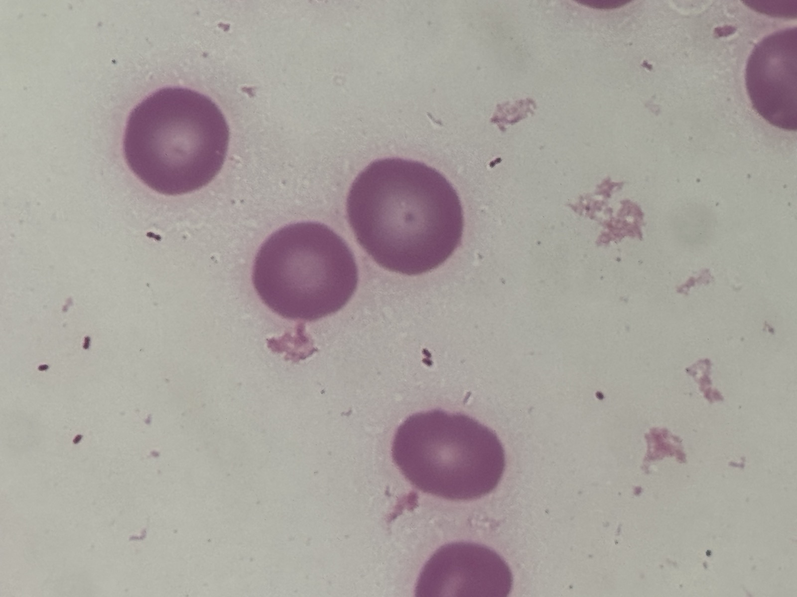

グラム染色 像 撮影：ICU関谷

分類・特徴
上気道に常在する小型グラム陰性桿菌（多形性の小桿菌）。莢膜をもつ血清型（a〜f）と莢膜をもたない無莢膜型（non-typeable, NTHi）に分かれ、Hib 結合型ワクチン普及後の現在は NTHi が侵襲性 H. influenzae 感染症の最多原因となっている[1][2]。
- グラム染色
- 陰性小桿菌（多形性の coccobacillus）
- 酸素要求
- 通性嫌気性[1]
- 発育条件
- X 因子（ヘミン）と V 因子（NAD）を要求する発育困難菌。チョコレート寒天で発育し、S. aureus 周囲で衛星現象を示す[1]
- 莢膜型
- 有莢膜（a〜f、b 型が古典的に侵襲性）／無莢膜型（NTHi）[1][3]
- 常在
- ヒト上気道（鼻咽頭）に保菌[1]
- 主要耐性
- β-ラクタマーゼ（TEM-1 型）産生がアンピシリン耐性の主機序。加えて ftsI（PBP3）変異による BLNAR（β-ラクタマーゼ陰性アンピシリン耐性）が増加[1][5][6]
- 同定
- X・V 因子要求性で確認、莢膜型は血清型別・PCR[1]
主な感染症
抗菌薬選択
第一選択（軽症・β-ラクタマーゼ陰性株）
- アモキシシリン／アンピシリン
β-ラクタマーゼ非産生かつ BLNAR でない株が対象。感受性を確認して用いる[1]。
β-ラクタマーゼ産生株
- アモキシシリン・クラブラン酸／アンピシリン・スルバクタム
TEM-1 型 β-ラクタマーゼによるアンピシリン耐性はβ-ラクタマーゼ阻害薬の併用で回避できる[1][6]。 - 第3世代セフェム（セフトリアキソン／セフォタキシム）
中等症以上・代替として有用。
重症・侵襲性感染症・髄膜炎
- セフトリアキソン／セフォタキシム
侵襲性感染症・髄膜炎の標準。髄液移行が良好で第一選択となる[1]。
BLNAR 株への注意
- BLNAR は β-ラクタマーゼ阻害薬併用では克服できない
BLNAR は ftsI（PBP3）変異が機序のため、アモキシシリン・クラブラン酸を加えても感受性は回復しない。第3世代セフェムを選択する[5][6]。
代替・経口薬
出典
- Van Eldere J, Slack MPE, Ladhani S, Cripps AW. Non-Typeable Haemophilus Influenzae, an Under-Recognised Pathogen. Lancet Infect Dis 2014;14(12):1281-92.
- Oliver SE, Rubis AB, Soeters HM, et al. Epidemiology of Invasive Nontypeable Haemophilus Influenzae Disease—United States, 2008-2019. Clin Infect Dis 2023;76(11):1889-1895.
- Soeters HM, Oliver SE, Plumb ID, et al. Epidemiology of Invasive Haemophilus Influenzae Serotype a Disease—United States, 2008-2017. Clin Infect Dis 2021;73(2):e371-e379.
- Hani E, Abdullahi F, Bertran M, et al. Trends in Invasive Haemophilus Influenzae Serotype b (Hib) Disease in England: 2012/13 to 2022/23. J Infect 2024;89(4):106247.
- Su PY, Cheng WH, Ho CH. Molecular Characterization of Multidrug-Resistant Non-Typeable Haemophilus Influenzae with High-Level Resistance to Cefuroxime, Levofloxacin, and Trimethoprim-Sulfamethoxazole. BMC Microbiol 2023;23(1):178.
- Wang XL, Xie J, Guo YB, et al. Lower Respiratory Tract Isolates of Non-Typeable Haemophilus Influenzae in Western Sichuan, China: Antimicrobial Susceptibility, Mechanisms of β-Lactam Resistance and Decade Changes. J Glob Antimicrob Resist 2019;21:324-330.
- Leung AKC, Wong AHC. Acute Otitis Media in Children. Recent Pat Inflamm Allergy Drug Discov 2017;11(1):32-40.